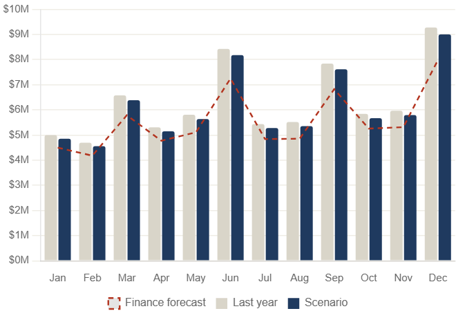

Bret Lawson
Analytics and measurement for ecommerce and omnichannel retail: attribution, incrementality, forecasting, and the data platform underneath.
Analytics and measurement leader, twenty years in ecommerce and omnichannel retail. I build the data layer, do the analysis, and ship the reporting, end to end, so leadership plans against numbers that hold up in the room.
Selected work
Five case studies from the last year: the data layer, the organic search decomposition that ran on it, AI search measurement, the brand-search analysis that showed lost clicks could not be bought back, and the Shopping bid-goal change that cost ecommerce orders. Each page says at the bottom which figures are real and which are disguised. And one model you can drive yourself, on synthetic data.

Paid-search planning model: next year's spend by channel to sales by month
Spend by channel in; sessions, conversion, AOV, and sales by month out. Per-channel response curves, a brand ceiling, halo and cannibalization on or off.
Organic search traffic fell by a quarter. Rankings explained under 1% of it.
Seven measured causes that add up exactly to the loss. Store listings and lower category demand did most of the damage, AI Overviews took a fifth, and blue-link rank, the thing the org was organized around, was 0.7%. The head term held #1 the whole time.
AI Overviews cost a national retailer 13% of its Google organic traffic in August 2026. AI assistants sent back 2.7%.
Both measured monthly on the same base. The AI Overview loss grew from 2.4% to 13.1% of Google organic visits in a year. AI assistant visits stayed between 1.3% and 4.1% of that base, and ChatGPT sent 95% of them.
One data mart replaced eight source systems and reconciles to finance to the dollar.
One row per day, 136 documented metrics, refreshed every morning, read by 40 downstream projects. Ecommerce sales match finance to the dollar. It also caught three broken feeds before they reached a deck.
Brand search clicks fell 27% at 96% impression share. More budget could not have bought them back.
Impression share was already 96%. Click elasticity to bid: +0.08, statistically zero. Even at 100% share on every campaign, clicks would still trail last year. Over 80% of the drop was one campaign someone switched off. The money went to channels with headroom.
Bidding Google Shopping ads on store sales cost a national retailer 5% of its ecommerce orders and added no store orders.
The cost was 5.2% of ecommerce orders site-wide, with a 95% interval of 2.9% to 8.0%. No other channel recovered the lost orders. Store orders per Shopping click fell 13%, and omnichannel sales per click fell 12.7% measured like for like.
- Dashboard suite·75+ dashboards built as Python-generated HTML pages, with no BI licenses and no server, including a working replica of the flagship funnel decomposition.
- Online-to-offline attribution·paid marketing ROAS was 0.9 on web sales, 4.0 with store sales stitched in, and 2.4 after holdout calibration.
- Sales-floor behavior analytics·the close-rate leaderboard was ranking tool adoption, not closing skill; three honest denominators split coaching into the right conversations.
- SKU sales decomposition·splits sales swings into launches, exits, and true like-for-like movement, and auto-flags SKUs whose conversion is quietly collapsing.
- Purchase-propensity signals·per-channel models for on-site personalization, including the feature that turned out to be 90% data leakage, caught before deployment.
About
I'm an analytics and measurement leader with twenty years in ecommerce and retail. I spent a decade building and running my own ecommerce company before moving into enterprise analytics, which is why I think in P&L terms first and dashboards second.
At a nine-figure national retailer I built the ecommerce analytics practice from the ground up: the warehouse modeling, the forecasts leadership plans against, and the attribution that ties marketing spend to real store revenue. I work the whole stack, from the data model to the number on the slide.
What I do best is take data nobody else can connect and turn it into an interactive view that answers the question on the table, and the one no one had thought to ask yet. Lately that runs through an agentic-AI workflow that compresses weeks of analysis into days. The thing I care about most is whether an answer survives the follow-up question in the room.
Experience
- Built the ecommerce analytics practice from zero for a nine-figure business: a dbt semantic layer on BigQuery unifying ERP, ecommerce, marketing, and behavioral data into a governed single source of truth.
- Designed and shipped executive dashboards in Streamlit, R Shiny, Looker Studio, and custom HTML, built for adoption rather than just delivery.
- Delivered revenue and KPI forecasts at ±5% accuracy used for budget allocation, plus a CPC-based paid-search traffic engine and spend-scenario models for annual planning.
- Architected online-to-offline attribution linking digital marketing spend to in-store transactions, complementing media-mix modeling with transaction-level precision.
- Integrated Claude Code and MCP data connectors into the analytics workflow, with Python computing every number and the model only writing the summary; 1,350 commits in eleven months.
- Led omnichannel analytics for an 800+ location national retailer; promoted from Digital Analytics Manager in 2019.
- Built cross-channel attribution integrating online and offline touchpoints to guide budget allocation and reduce customer acquisition cost.
- Deployed an Adobe Advertising DSP framework with geospatial targeting, delivering a 30%+ improvement in campaign efficiency.
- Established the KPI framework connecting web analytics to store foot traffic for executive visibility.
- Launched a 400,000+ SKU ecommerce platform in 14 months, hitting top-of-industry conversion benchmarks.
- Led cross-functional teams of 20+ across development, merchandising, and operations; integrated catalog, inventory, and payment systems.
- Built a specialty ecommerce retailer to $2M+ revenue and #3 nationally in its category.
- Personally engineered a 100% automated order, fulfillment, and reporting system end-to-end, and applied early analytics to pricing, acquisition, and inventory.
Skills & stack
Tools are table stakes, so this is kept brief on purpose.
How I work
The working rules behind the AI-native claim, with the numbers that can be checked.
Python computes every number. The model only writes the summary.
The anomaly-detection pipeline, built and backtested in September, scores each day against the median of the last eight same weekdays, holiday weeks excluded, and flags at three robust standard deviations plus a minimum practical change. The summary step receives only numbers already computed and writes nothing if it cannot.
Refreshes wait for complete source data.
41 scheduled jobs refresh the dashboards and pipelines. The ones that read Adobe CJA, Google Ads, or Datadog check that yesterday's data has landed first. If it has not, the job exits, deploys nothing, and retries later.
Each dashboard documents its scope and sources.
Each README records scope, grain, upstream tables, refresh schedule, and the request it answered. 85 of them were audited against their live pages on one day in October.
Investigations become reusable playbooks.
A cart-to-checkout investigation logged 36 audit checks in two weeks: promo codes, test arms, price-tag lag, bot traffic, session replays, and a broken analytics zone. The sequence of checks and its pitfalls became a reusable diagnostics playbook.
One written standard for every dashboard.
The house standard covers metric definitions, data-integrity gates, date controls, exports, and layout. Money rows must foot to the attribution dashboard to the dollar.
Third-party data arrives by connector.
Conductor and SimilarWeb data come in by MCP connector, with the calls documented beside the cache. Claude Code is the working environment, and everything is version-controlled: 500 commits since September.
Available for senior analytics leadership roles.
If you're building an analytics function that has to turn data into decisions leadership trusts, that's the work I do best. Bring me the messy, multi-source problem nobody's been able to answer.